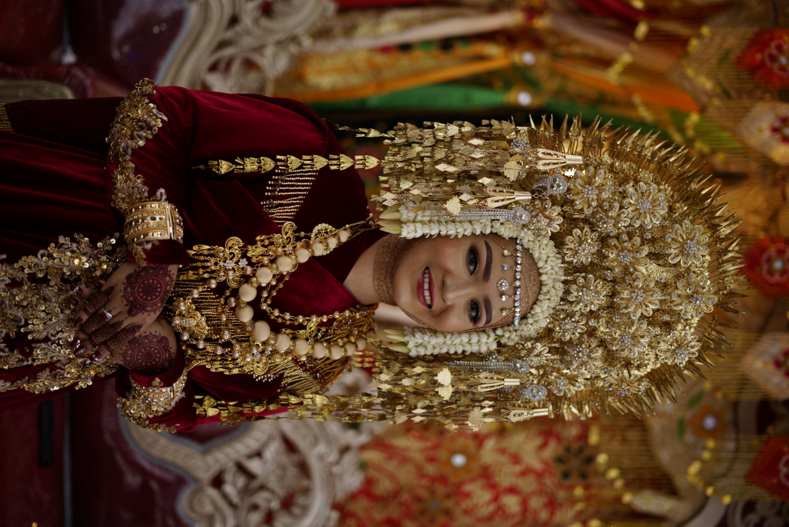
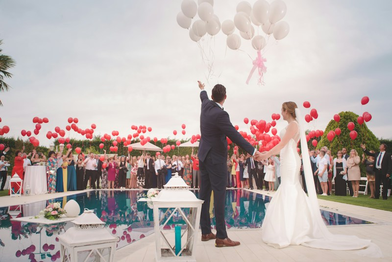
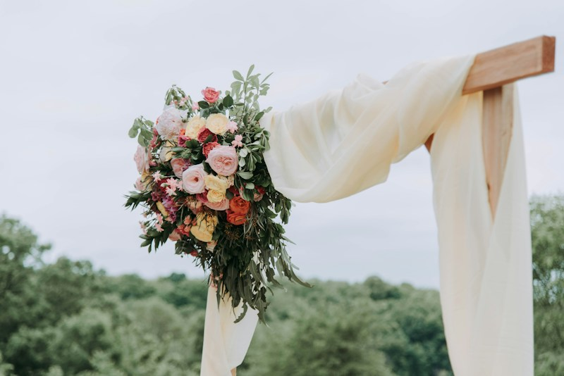

Undangan Pernikahan Adat Minangkabau
Rizky & Adelia
Marapulai (Sutan Palimo Basa) & Anak Daro

"Dan di antara tanda-tanda kebesaran-Nya ialah Dia menciptakan pasangan-pasangan untukmu dari jenismu sendiri, agar kamu cenderung dan merasa tenteram kepadanya, dan Dia menjadikan di antaramu rasa kasih dan sayang."— QS. Ar-Rum: 21
"Kaciak banamo, gadang bagala. Kok jauah dapek diimbau, kok dakek dapek diragkuik. Barek samo dipikua, ringan samo dijinjiang."
Marapulai & Anak Daro
Dengan memohon rahmat dan ridho Allah SWT serta doa restu Ninik Mamak, Alim Ulama, Cadiak Pandai, Bako, dan karib kerabat, kami memperkenalkan kedua mempelai:
Marapulai
Rizky Pratama, S.T.
Gelar Adat: Sutan Palimo Basa
Suku Caniago • Kurai, Bukittinggi
Putra pertama dari pasangan:
Bpk. Ir. Hendra Pratama (Dt. Bandaro Kayo)
& Ibu Hj. Siti Rohana
Keluarga Besar Mamak Rumah & Bako Suku Caniago

Anak Daro
Adelia Putri Maharani, S.Ds.
Putri Berdarah Minangkabau
Suku Koto • Koto Nan Ampek, Payakumbuh
Putri kedua dari pasangan:
Bpk. Dr. H. Faisal Maharani (Dt. Marajo)
& Ibu Hj. Nurhayati
Keluarga Besar Mamak Rumah & Bako Suku Koto
Menghitung Hari Bahagia
Sabtu, 24 Oktober 2026 • Pukul 08.00 WIB
Rangkaian Prosesi Adat & Acara
Rangkaian prosesi pernikahan adat Minangkabau kami laksanakan dengan penuh kekhidmatan:
Malam Bainai
Doa Kasih & Pelekatan Inai
Jumat, 23 Oktober 2026
Pukul 19.30 WIB - Selesai
Kediaman Keluarga Anak Daro
Jl. Pinus Raya Blok B2 No. 18, Jakarta Selatan
Busana:
Baju Kurung / Nuansa Emas & Merah Maroon
Akad Nikah
Ijab Kabul & Gelar Marapulai
Sabtu, 24 Oktober 2026
Pukul 08.00 - 10.00 WIB
Masjid Sasana Kriya TMII
Kompleks Taman Mini Indonesia Indah, Jakarta Timur
Busana:
Busana Muslim Formal / Putih Bersih
Baralek Gadang
Resepsi Adat Minangkabau
Sabtu, 24 Oktober 2026
Pukul 11.00 - 14.00 WIB
Grand Ballroom Sasana Kriya
Taman Mini Indonesia Indah, Jakarta Timur
Busana:
Batik / Songket / Kebaya / Formal Elegan
Lokasi Gedung Sasana Kriya TMII
Sasana Kriya Grand Ballroom, Taman Mini Indonesia Indah, Cipayung, Jakarta Timur
Kehormatan Keluarga Besar
"Anak dipangku kamanakan dibimbiang, urang kampuang dipatenggangkan."
Ungkapan takzim dan terima kasih kepada segenap sesepuh adat, Ninik Mamak, Bako, dan karib kerabat dari kedua suku:
Keluarga Marapulai (Suku Caniago)
- Ninik Mamak: Dt. Bandaro Kayo & Dt. Rangkayo Basa
- Mamak Rumah: Bpk. H. Syamsul Bahri & Bpk. Ir. Ridwan Caniago
- Bako: Keluarga Besar Suku Tanjuang, Bukittinggi
- Induak Bako: Ibu Hj. Rosmawati & Ibu Hj. Mardiah
Keluarga Anak Daro (Suku Koto)
- Ninik Mamak: Dt. Marajo & Dt. Mangkuto Sati
- Mamak Rumah: Bpk. Drs. H. Zulkifli Koto & Bpk. Ir. Arman Koto
- Bako: Keluarga Besar Suku Sikumbang, Payakumbuh
- Induak Bako: Ibu Hj. Ellyzar & Ibu Hj. Yulinar
Galeri Momen Bahagia
Potret pre-wedding dan busana keagungan adat Minangkabau yang merekam rasa syukur menuju hari bahagia.


Konfirmasi Kehadiran
Kehadiran Anda sangat kami nantikan untuk melengkapi kebahagiaan kami. Mohon konfirmasikan kehadiran Anda melalui formulir di bawah ini:
Untaian Doa & Ucapan Restu
Terima kasih atas segala cinta, doa tulus, dan ucapan penuh berkah dari Ninik Mamak, Bako, keluarga, dan para sahabat terkasih.
Tanda Kasih & Amplop Digital
Doa restu Anda adalah karunia terindah bagi kami. Namun jika Anda ingin memberikan tanda kasih untuk melengkapi langkah awal perjalanan kami, kami menyediakan kemudahan melalui:
Nomor Rekening Marapulai:
8820 4912 3012
a/n Rizky Pratama
Nomor Rekening Anak Daro:
137 00 2938 1204
a/n Adelia Putri Maharani
Kirim Kado Fisik
Jl. Pinus Raya Blok B2 No. 18, Kompleks Perumahan Cilandak Indah, Jakarta Selatan, DKI Jakarta 12430
(Penerima: Rizky Pratama / 0812-9876-5432)